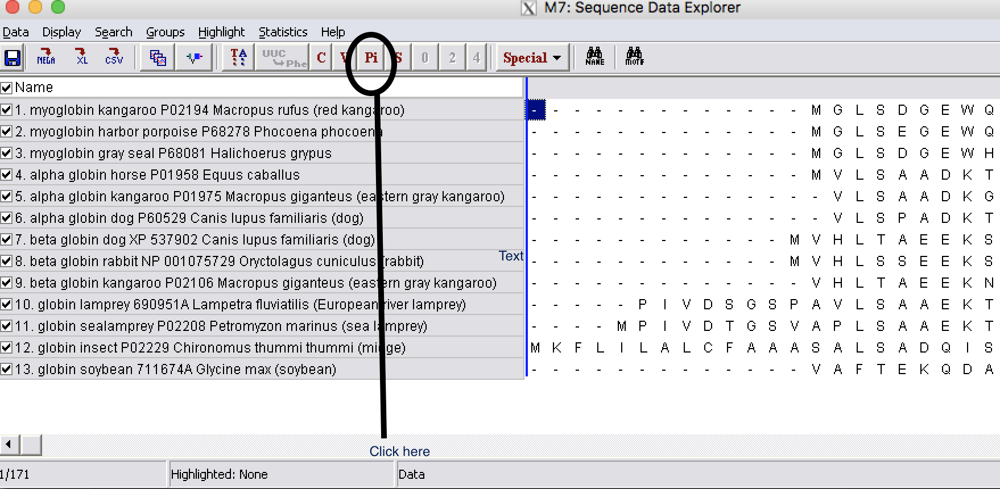

Steps of building a tree¶
Make multiple sequence alignment for Globin gene family¶
| Step 1: | Download globin.fasta from Blackboard and perform a MSA using MUSCLE (follow the steps we discussed last week). |
|---|---|
| Step 2: | Examine the alignment to make sure it is correct and no additional editing is needed. |
| Step 2: | Export the alignment as a fasta format file on your Desktop. Name it as globin_align |
Find informative sites for Parsimony¶
| Step 1: | Open the alignment file you just created by going to using Open file/Session under Data |
|---|

| Step 2: | Go to Explore Active Data under Data |
|---|---|
| Step 3: | Click on Pi button and this show site that are informative for Parsimony |

Building Phylogenetic trees¶
| Step 1: | Click on Phylogeny |
|---|

| Step 2: | Make Neighbor-Joining tree with Bootstrap 500 replicates
|
|---|

| Step 3: | Save the tree as a pdf file by clicking on Image button |
||||||
|---|---|---|---|---|---|---|---|
| Step 4: | Build a tree using Parsimony method with 50 Bootstrap replicates (500 will be very slow).
|